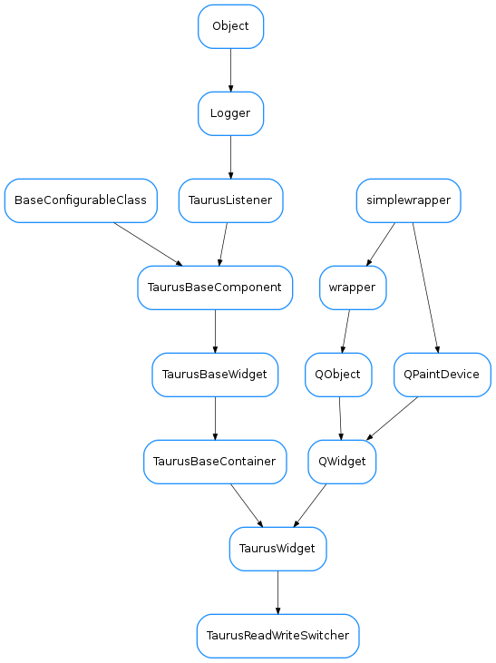

TaurusReadWriteSwitcher¶

-
class
TaurusReadWriteSwitcher(parent=None, designMode=False, readWClass=None, writeWClass=None, enterEditTriggers=None, exitEditTriggers=None)[source]¶ Bases:
taurus.qt.qtgui.container.tauruswidget.TaurusWidgetThis is a base class for creating widgets that can switch beetween read and write mode by combining a Taurus widget for reading and a Taurus Widget for writing.
For example, if you want to combine a TaurusLabel with a TaurusValueLineEdit, you can implement it as follows:
class MyRWSwitcher(TaurusReadWriteSwitcher): readWClass = TaurusLabel writeWClass = TaurusValueLineEdit
Alternatively, you can instantiate the TaurusReadWriteSwitcher class directly and pass the read and write classes to the constructor:
w = TaurusReadWriteSwitcher(readWClass=TaurusLabel, writeWClass=TaurusValueLineEdit)
Or you can even set the read and write widgets (instead of classes) after instantiation:
w = TaurusReadWriteSwitcher() a = TaurusLabel() b = TaurusValueLineEdit() w.setReadWidget(a) w.setWriteWidget(b)
TaurusReadWriteSwitcher will normally show the read widget by default, but it will allow to switch to “edit mode” (where the write widget is shown instead). Enetering and exiting the edit mode is controlled by “triggers”. Triggers can be key presses, QEvents or signals.
The default implementation sets pressing F2 or doubleclicking the read widget as the triggers for entering edit mode, and pressing Escape, losing the focus or applying the value on the write widget as the triggers for leaving the edit mode. This can be customized by changing enterEditTriggers and exitEditTriggers class members or by passing enterEditTriggers and exitEditTriggers keyword parameters to the constructor of TaurusReadWriteSwitcher:
enterEditTriggers is a tuple containing one or more of the following:
- key shortcut (either a Qt.Qt.Key or a QKeySequence)
- event type on the read widget (a Qt.QEvent.Type)
- signal from the read widget (a str representing a Signal signature)
exitEditTriggers is a tuple containing one or more of the following:
- key shortcut (either a Qt.Qt.Key or a QKeySequence)
- event type on the write widget (a Qt.QEvent.Type)
- signal from the write widget (a str representing a Signal signature)
#@todo: check integration with designer
-
enterEditTriggers= (16777265, 4)¶
-
exitEditTriggers= (16777216, 9, 'applied')¶
-
readWClass= None¶
-
setModel(model)[source]¶ This implementation propagates the model to the read and write widgets. You may reimplement it to do things like passing different models to each.
-
setReadWidget(widget)[source]¶ set the read Widget to be used. You can reimplement this method to tweak the read widget.
Parameters: widget ( QWidget) – This should be Taurus widget
-
setWriteWidget(widget)[source]¶ set the write Widget to be used You can reimplement this method to tweak the write widget.
Parameters: widget ( QWidget) – This should be Taurus widget (typically a TaurusBaseWritableWidget)
-
writeWClass= None¶